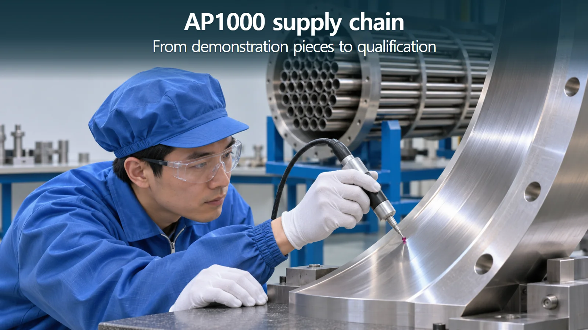
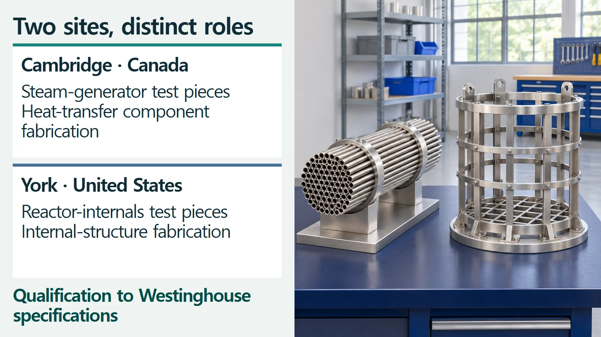
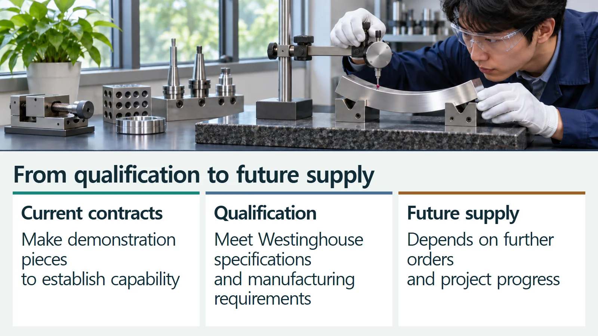

Nuclear supply chain explainer
Major AP1000 Components: Manufacturing Qualification and the Road to Commercial Supply
What two North American sites begin with demonstration pieces, and what still has to line up before commercial supply
A nuclear news headline like "supply contract signed" can suggest that large components are already on order for a specific plant. In practice, large nuclear supply chains often begin a step earlier: the designer first checks whether a fabricator can build the part to specification by having it make demonstration pieces, and only afterwards places separate commercial orders for the real hardware. The announcement issued in North America on 2026-11-23 for the Westinghouse AP1000 sits at that earlier step. This post walks through what is being built where, what a manufacturing qualification verifies, and what conditions still need to line up before commercial supply.

Demonstration pieces ordered for two North American sites
Westinghouse Canada and BWXT Canada jointly announced on 2026-11-23 that they had entered into supplier qualification contracts for major AP1000 components. Westinghouse supplies the design data and accumulated manufacturing experience while BWXT fabricates demonstration pieces to show it can build to those specifications. The current step is a demonstration-piece stage; any commercial order for a finished steam generator or set of reactor-vessel internals would come later as a separate decision after qualification.
The scope is split between two sites. In Ontario, the Cambridge facility in Canada makes steam-generator demonstration pieces, and in Pennsylvania, the York facility in the United States makes reactor-vessel internals demonstration pieces. Even inside a single contract framework, the two items are very different pieces of hardware, so the test fabrication runs on separate production lines. The published facts stop there: the dimensions, quantities and qualification schedule of the demonstration pieces, as well as the scope and timing of any follow-on commercial purchase orders, were not included in the announcement.
Both companies framed the deal as securing North American manufacturing capacity for major AP1000 components. The current contracts describe an intermediate step aimed at having qualified suppliers in North America ready to build these two items to the AP1000 design, and the specific plant projects that may later convert that capacity into commercial orders are separate decisions.
What a steam generator and reactor internals each do
Even within one AP1000 contract, the two components assigned to the two sites perform very different jobs. Understanding that difference makes it clear why the test fabrication happens in two places.
A steam generator is a large heat exchanger that keeps primary coolant and secondary-side water physically separated while transferring heat from one to the other. Its core element is a bundle of thousands of thin metal tubes bent into a U shape (U-tubes). Hot primary coolant leaving the reactor flows through the inside of these U-tubes, while secondary-side water boils on the outside and the resulting steam drives the turbine. The US Nuclear Regulatory Commission's safety evaluation report NUREG-1793, Chapter 5 on the Reactor Coolant System, describes the AP1000 steam generator as following this U-tube configuration. Thousands of tubes must be formed to dimensional tolerance for heat transfer and the pressure boundary to behave as designed. The capability Cambridge has to demonstrate, therefore, is precision fabrication of a large heat-transfer component.
Reactor-vessel internals do a different job. Westinghouse's AP1000 Pre-Construction Safety Report (UKP-GW-GL-793, Revision 1, page 173), filed with the UK regulator, describes how the internals support and align the core and control rods and direct coolant flow toward the fuel assemblies. In plainer terms, they are the structural and flow-channel components that decide where the fuel sits inside the reactor vessel, how it is held in place, and the path the coolant takes. Cylindrical support structures, flow baffles, control-rod guide tubes, and the upper and lower support plates for the fuel assemblies all interlock to work together. The capability York has to demonstrate is dimensional accuracy and assembly precision of large structural components.
So within the same AP1000 contract framework, Cambridge and York prove two distinct manufacturing capabilities: a heat-transfer component on one side, a load-carrying structural and flow-channel assembly on the other. Qualification runs item by item, which is why the two items go to two separate sites.

What a manufacturing qualification actually verifies
So what does "manufacturing qualification" itself look at in concrete terms, and where does the current contract sit within that process?
For nuclear projects under US regulation, suppliers of safety-related equipment work within the quality-assurance framework required by 10 CFR Part 50 Appendix B. In applicable US projects that framework typically combines three elements: (i) prior evaluation of the supplier, (ii) inspection during fabrication, and (iii) inspection of delivered items, together producing documented evidence that supplier capability and the manufactured result meet procurement specifications. That describes how the US procurement-control system is built for applicable US work; the actual inspection plan for any specific country or project depends on the requirements written into that purchase contract. The inspection plan tied to the current BWXT-Westinghouse contracts was not disclosed in the announcement.
The supplier qualification contract just announced corresponds to the first element: verifying up front that the supplier can build to specification. The verification method is to actually fabricate demonstration pieces and compare their dimensions, materials, welds and assembly results against the procurement specifications. The next decisions are the timing and outcome of qualification, and only after that, the award of commercial production orders. The report framing is explicit that each of these three items is a separate disclosure event.

A second number is worth reading alongside this. On 2026-11-12, about ten days before the qualification announcement, BWXT announced an investment of roughly 80 million Canadian dollars that added 55,000 square feet of floor space at the Cambridge facility. It is a sizeable investment and the working floor is indeed larger. At the same time, it was announced separately from the demonstration-piece order, and the new space can host fabrication of several types of nuclear equipment. The purchaser's test at the qualification stage is whether the item-specific requirements match the actual manufacturing result, which turns on the specific inspection records for each component. Floor-area expansion and demonstrated item-specific manufacturing capability therefore sit on different axes.
Conditions that must align before commercial supply
The current step is a signed supplier qualification contract with demonstration pieces ordered. Turning that into real commercial supply for an operating plant still needs confirmation of three factors that the company identifies as uncertainties.
First, the timing and result of the qualification evaluation. The demonstration pieces have to be completed, their dimensions, materials and inspection records compared to the procurement specifications, and a positive judgment issued that the supplier is qualified for that item. The target completion date and the pass criteria for this evaluation were not disclosed. Second, the progress of a potential project. North American manufacturing capacity turns into actual orders only when there is an AP1000 plant project to receive them. Which project would be the target, and at which licensing and financing stage that project sits, are things to track in each project's own disclosures. Third, the receipt of a commercial production order. Even with a positive qualification result and an active plant project, ordering "one steam generator" or "one set of reactor internals" is a separate follow-on contract. The announcement does not include future order values or volumes that might be shared with other suppliers.
Drawn as a sequence: current contract (build demonstration pieces to establish capability) → qualification (verify Westinghouse specifications and manufacturing requirements are met) → future commercial supply (depending on further orders and project progress). Reading a line like "supply contract" against that sequence makes schedule implications easier to gauge. This North American announcement sits at the first of the three points, and the next disclosures to watch are the item-by-item qualification outcome, the facility scope it applies to, and the commercial orders that may follow.